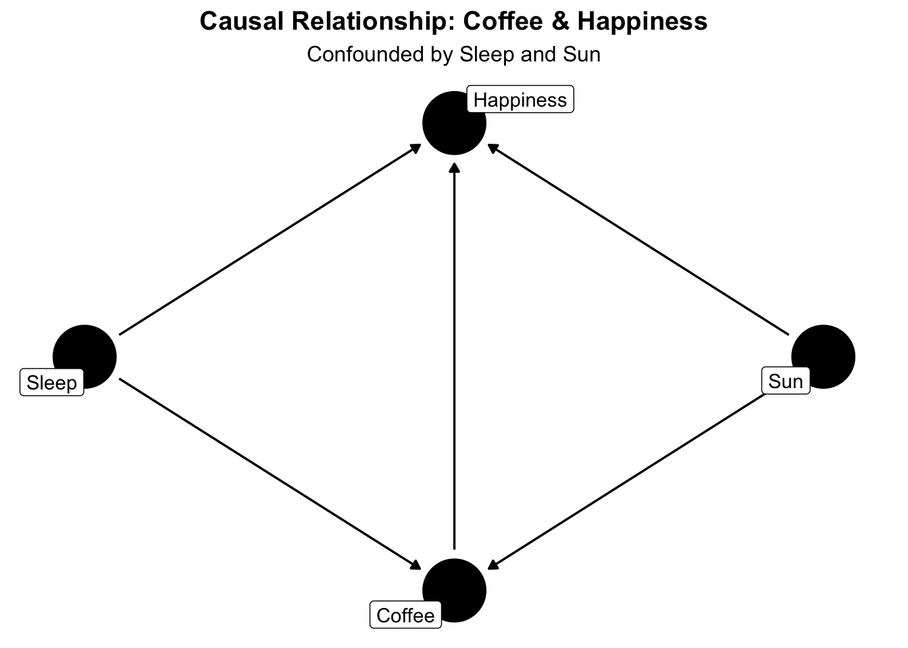
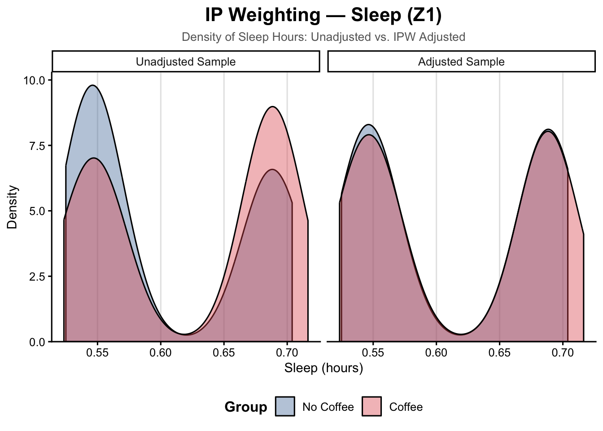

Entropy Balancing and Inverse Probability Weighting
Entropy Balancing
IP Weighting
Author
Ryan Batten
Published
April 7, 2027
Paralysis by Analysis: Causal Methods
Causal inference using real-world data can be quite useful, however we need to account for confounding. Unfortunately, we can’t use randomization however there is a large number of methods we can choose from to adjust for confounding. Propensity score matching (note: a variety of matching methods are available), inverse probability weighting, outcome regression, targeted machine learning estimation, augmented inverse probability weighting, doubly robust methods….the list goes on and on.
A common question becomes how do we choose between methods? This post will try to answer that for two different methods, specifically:
Entropy Balancing
Inverse Probability Weighting
Weight a Minute
Before we dive into these methods, we need to lay some groundwork for what each are, and how they work.
Inverse Probability Weighting
Inverse probability weighting is a useful tool for causal inference. To use this, we first have to estimate the propensity score, which is the probability of treatment given covariates (Rosenbaum and Rubin 1983). Next, we take the propensity score and put in in the denominator as:
\[
1/PS
\]
where PS is the propensity score.
Inverse probability weighting can be used to estimate four different types of causal estimands: the average treatment effect (ATE), the average treatment effect in the Coffee (ATT), the average treatment effect in the unCoffee (ATU) and the average treatment effect in the overlap (ATO) (Greifer and Stuart 2021,).
Entropy Balancing
Entropy balancing works by balancing the groups directly using equations. I realize that definition isn’t super helpful, so let’s try again. What exactly is entropy? Glad you asked!
If you’re thinking entropy from physics (like I first did), you’re on the right track! Entropy has to do with chaos, but in statistics it’s about the “chaos” from a probability distribution. When we describe a probability distribution, we can use different moments.
TipMoments in Time
If this sounds like it’s starting to get complicated, don’t worry! Moments sounds tricky, but they aren’t all that scary. Think of a continuous variable from a normal (Gaussian) distribution. The first moment is the mean. The second moment is the variance. Third is skewness. Fourth is kurtosis (how much of a “peak” ) there is. That’s really all you need to know for this post!
So why does this matter for entropy balancing? Because you use these moments when deciding what needs to be balanced. For example, you could say balance on just the mean. Or balance on the mean and variance. Basically any combination of the moments. This is a double-edged sword, which we’ll get to later.
Causal Question
Before any good analysis, we need to first define our causal question. For this example, we are going to ask ourselves does coffee cause happiness? Specifically, in monsters. We have two confounders: sleep and whether it is sunny outside or not.
Code
library(tidyverse)
── Attaching core tidyverse packages ──────────────────────── tidyverse 2.0.0 ──
✔ dplyr 1.2.0 ✔ readr 2.2.0
✔ forcats 1.0.1 ✔ stringr 1.6.0
✔ ggplot2 4.0.2 ✔ tibble 3.3.1
✔ lubridate 1.9.5 ✔ tidyr 1.3.2
✔ purrr 1.2.1
── Conflicts ────────────────────────────────────────── tidyverse_conflicts() ──
✖ dplyr::filter() masks stats::filter()
✖ dplyr::lag() masks stats::lag()
ℹ Use the conflicted package (<http://conflicted.r-lib.org/>) to force all conflicts to become errors
Code
library(ggdag)
Attaching package: 'ggdag'
The following object is masked from 'package:stats':
filter
Code
# Create the DAG objectcoffee_dag <-dagify( happiness ~ coffee + sleep + sun, coffee ~ sleep + sun,exposure ="coffee",outcome ="happiness",labels =c(coffee ="Coffee",happiness ="Happiness",sleep ="Sleep",sun ="Sun" ))# Plot the DAGggdag(coffee_dag, text =FALSE, use_labels ="label") +theme_dag() +labs(title ="Causal Relationship: Coffee & Happiness",subtitle ="Confounded by Sleep and Sun") +theme(plot.title =element_text(hjust =0.5, face ="bold"), plot.subtitle =element_text(hjust =0.5) )

Start the Comparing!
Alright, so we have our question. Now to compare methods, there are a few ways we can do this. For this post, we are going to compare the two methods, specifically for:
Balance
For balance, we are going to use both standardized mean differences and plots. Specifically, plots of the distributions of both confounders (pre-/post-weighting) (note: entropy balancing does not estimate a propensity score).
Effective sample size
Effective sample size (ESS) is the number of individuals you would need to get the same level of precision without using weights. For example, if you’re sample size is 100 before weighting but an ESS of 50, this means you would need 50 people to get the same level of precision (i.e., less precision after weighting).
ImportantDiagnostics for Weights
When using weighting methods, we should always inspect the distribution of the weights and the summary statistics. This helps check for misspecification of the propensity score model (if appropriate) and for extreme weights. For this blog post, we are not because we know it’s correct (we know the two variables are being adjusted for). However in practice it’s crucial to check the diagnostics for the weights.
Enter the Simulation
Before we begin, we need to set some ground rules for our simulation:
Sample size of 250 (arbitrary)
Two measured confounders (one continuous, one binary)
Binary treatment
Continuous outcome (happiness)
Target causal estimand will be the average treatment effect (ATE)
Methods we’ll explore:
Inverse probability weighting, with stabilized weights
Entropy balancing
Note: we will not be using doubly robust methods here.
Code
# Title: Setup # Description: This code is the setup for what we will be using later. It includes the libraries and any functions that we may need. library(tidyverse) # ol' faithful (previously loaded earlier)library(WeightIt) # for IP weightinglibrary(cobalt) # for checking balance library(flextable)# z1 - sleep# z2 - sunshine# x - coffee # y - happiness #... Functions ----# We will use this function to simulate data sim_data1 <-function(n =250, # sample size beta_trt =1.5, # treatment effect# Parameters for Z1 z1_mean =5, z1_sd =2, # Parameters for Z2z2_size =1, z2_prob =0.5, # Confounder - Effect on Xz1_on_x =0.05, z2_on_x =0.5,# Confounder - Effect on Yz1_on_y =0.5, z2_on_y =0.7){# Creating the Dataframe df <-data.frame(z1 =rnorm(n = n, mean = z1_mean, sd = z1_sd), # measured continuous confounderz2 =rbinom(n = n, size = z2_size, prob = z2_prob)# measured binary confounder ) %>% dplyr::mutate(beta_trt =1.5, prob =plogis(z1_on_x*z1 + z2_on_x*z2), x =rbinom(n = n, size =1, prob = prob), y = beta_trt*x + z1_on_y*z1 + z2_on_y*z2 +rnorm(n = n, mean =0, sd =1) )# Return the dataframereturn(df)}
Apply Each Method
At this point you might be thinking “JUST GET TO IT MAN!”….alright, alright, alright. We’ll apply each method. For entropy balancing, we’ll balance on two moments (the mean and variance). For the inverse probability weighting, we will use stabilized weights.
Code
scenario1 <-sim_data1()ebal1 <- WeightIt::weightit(x ~ z1 + z2, data = scenario1, method ="ebal", # using two moments for z1 and one for z2moments =c(z1 =2, z2 =1), estimand ="ATE" )ipw1 <- WeightIt::weightit(x ~ z1 + z2, data = scenario1, method ="glm", stabilize =TRUE,estimand ="ATE" )
Perfect! Now we have our weights for each method. Let’s check them out!
Balance
Any good causal analysis will need to have balance for the confounders. This is to ensure that exchangeability is met. So…how does balance look from both methods?
Let’s start with some love plots. These are plots of the standardized mean differences
# ── IP Weighting: Love Plot ────────────────────────────────────────────────────cobalt::love.plot( ipw1,continuous ="std",binary ="std",thresholds =c(m =0.1),colours =c("#4E79A7", "#E15759"), # unadjusted, adjustedshapes =c("circle", "diamond"),title ="Inverse Probability Weighting — Covariate Balance",subtitle ="Standardised Mean Differences (ATE)",sample.names =c("Unadjusted", "IPW Adjusted")) + cobalt_theme
As you can see, for the entropy balancing the standardized mean differences are 0! Hooray! This is by design. When we solve the equations, we solve them so that the SMDs are 0. If you were to check the variance ratios those should be equal as well.
Next, let’s look at some plots of the variables. SMDs are only one metric, so it’s best to check plots as well.
Scale for fill is already present.
Adding another scale for fill, which will replace the existing scale.
Warning: No shared levels found between `names(values)` of the manual scale and the
data's colour values.
“Wait a minute…..you said there’d be exact balance! There isn’t exact balance for sleep!” if that was your thought process, guess what? You’re right. There is exact balance though, it’s just on the moments we specified (i.e., mean and variance). For sunshine, you can see there is exact balance. Now what about IP weighting?
Scale for fill is already present.
Adding another scale for fill, which will replace the existing scale.
From these plots you can see there is sufficient balance, however using sunshine as an example it’s not quite as balanced as entropy balancing. That is because IP weighting first estimates a propensity score, which is then used to create weights. This means there won’t be exact balance (i.e., SMD of 0). As a side note, we should check the plot for the propensity score when using IP weighting.
Scale for fill is already present.
Adding another scale for fill, which will replace the existing scale.
Warning: No shared levels found between `names(values)` of the manual scale and the
data's colour values.

Effective Sample Size
Effective sample size (ESS) is an important metric to check. This is similar to why sample size matters so much when designing a study and choosing a statistical method. The ESS affects the level of precision you can expect, which in turn will affect how wide or narrow your confidence intervals are. Let’s see how these look compared to the original sample size.
So originally, the sample was 250 but it’s barely dropped! So that must mean that entropy balancing is the most greatest, useful, amazing-est method of all time, right? Not so fast…
Scenario 2 - Unequal SDs
If you look back to the first scenario at z1, you’ll see that the standard deviation isn’t that large. More importantly, it’s drawing from the same
Code
sim_data2 <-function(n =250,beta_trt =1.5,# Parameters for Z1 - now group-specific SDsz1_mean =5, z1_sd_Coffee =3, # SD for treatment groupz1_sd_No_Coffee =1, # SD for No Coffee group# Parameters for Z2z2_size =1, z2_prob =0.5,# Confounder - Effect on Xz1_on_x =0.05, z2_on_x =0.5,# Confounder - Effect on Yz1_on_y =0.5, z2_on_y =0.7) { df <-data.frame(z2 =rbinom(n = n, size = z2_size, prob = z2_prob) ) %>% dplyr::mutate(# Step 1: preliminary treatment assignment (used only to determine z1 SD)prob_prelim =plogis(z2_on_x * z2),x_prelim =rbinom(n = n, size =1, prob = prob_prelim),# Step 2: draw z1 with group-specific SDz1 =rnorm(n = n, mean = z1_mean,sd =ifelse(x_prelim ==1, z1_sd_Coffee, z1_sd_No_Coffee)),# Step 3: final treatment assignment now incorporating z1prob =plogis(z1_on_x * z1 + z2_on_x * z2),x =rbinom(n = n, size =1, prob = prob),# Outcomey = beta_trt * x + z1_on_y * z1 + z2_on_y * z2 +rnorm(n = n, mean =0, sd =1) ) %>% dplyr::select(-prob_prelim, -x_prelim) # drop scaffolding columnsreturn(df)}
Apply Each Method - Round 2
Now we are going to do the same thing
Code
scenario2 <-sim_data2()ebal2 <- WeightIt::weightit(x ~ z1 + z2, data = scenario2, method ="ebal", # using two moments for z1 and one for z2moments =c(z1 =2, z2 =1), estimand ="ATE" )ipw2 <- WeightIt::weightit(x ~ z1 + z2, data = scenario2, method ="glm", stabilize =TRUE,# using two moments for z1 and one for z2estimand ="ATE" )
Greifer, Noah, and Elizabeth A Stuart. 2021. “Choosing the Causal Estimand for Propensity Score Analysis of Observational Studies.”arXiv Preprint arXiv:2106.10577.
Rosenbaum, Paul R, and Donald B Rubin. 1983. “The Central Role of the Propensity Score in Observational Studies for Causal Effects.”Biometrika 70 (1): 41–55.